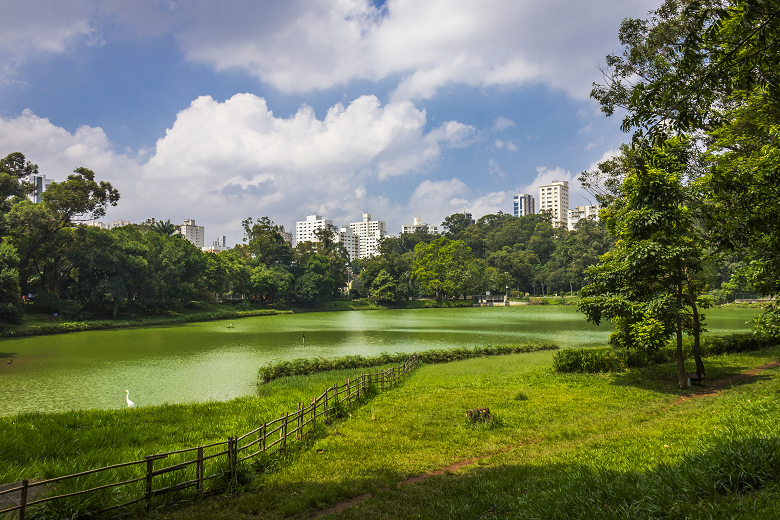
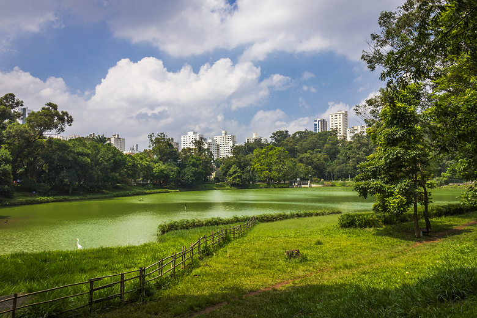

minhas experiencias
Olá, me chamo Vitória Sena dos Santos, tenho 17 anos, moro em São Paulo com minha mãe e meus três irmãos. Gosto bastante de sair com os meus amigos e com a minha irmã. Gosto de escutar música, podcasts de crimes, assistir séries e filmes. Não gosto de desrespeito, falta de educação e barulho. Já fiz muitos cursos, mas ainda não sei muito bem o que fazer da minha carreira. No entanto, estou tentando. O que eu desejo é conseguir trabalhar com o que eu gosto, ter minha própria renda e comprar um apartamento.
Olá, me chamo Vitória Sena dos Santos, tenho 17 anos, moro em São Paulo com minha mãe e meus três irmãos. Gosto bastante de sair com os meus amigos e com a minha irmã. Gosto de escutar música, podcasts de crimes, assistir séries e filmes. Não gosto de desrespeito, falta de educação e barulho. Já fiz muitos cursos, mas ainda não sei muito bem o que fazer da minha carreira. No entanto, estou tentando. O que eu desejo é conseguir trabalhar com o que eu gosto, ter minha própria renda e comprar um apartamento.